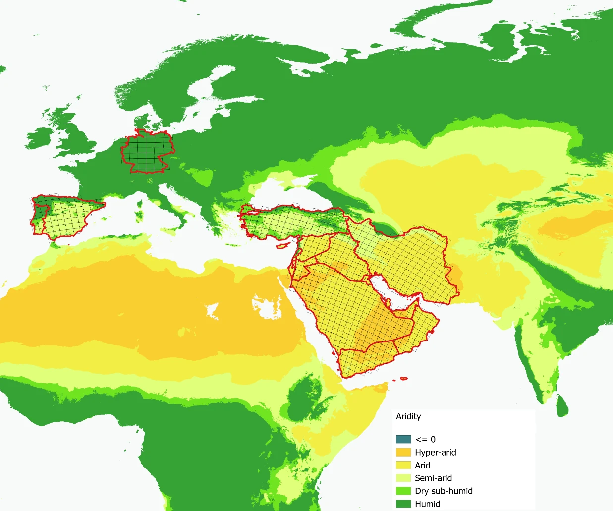
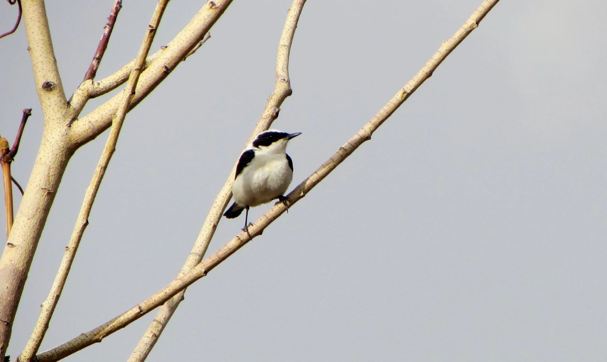
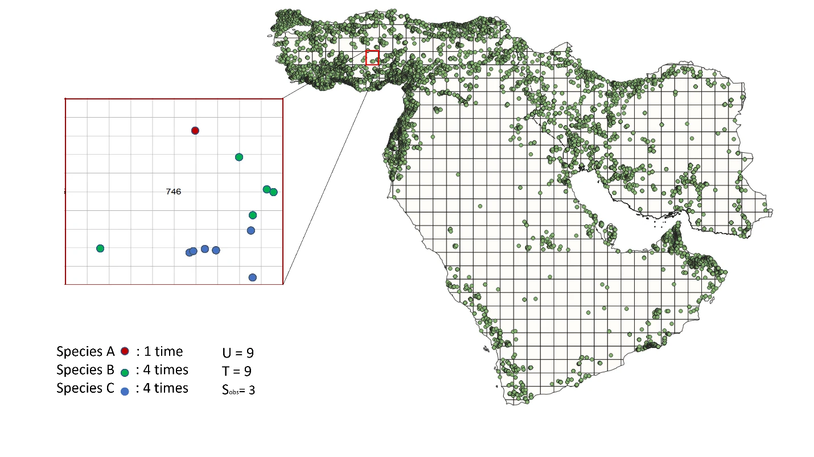
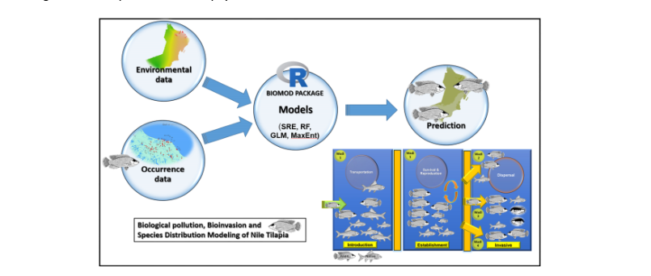
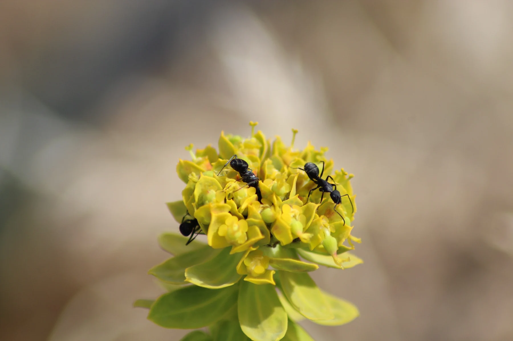
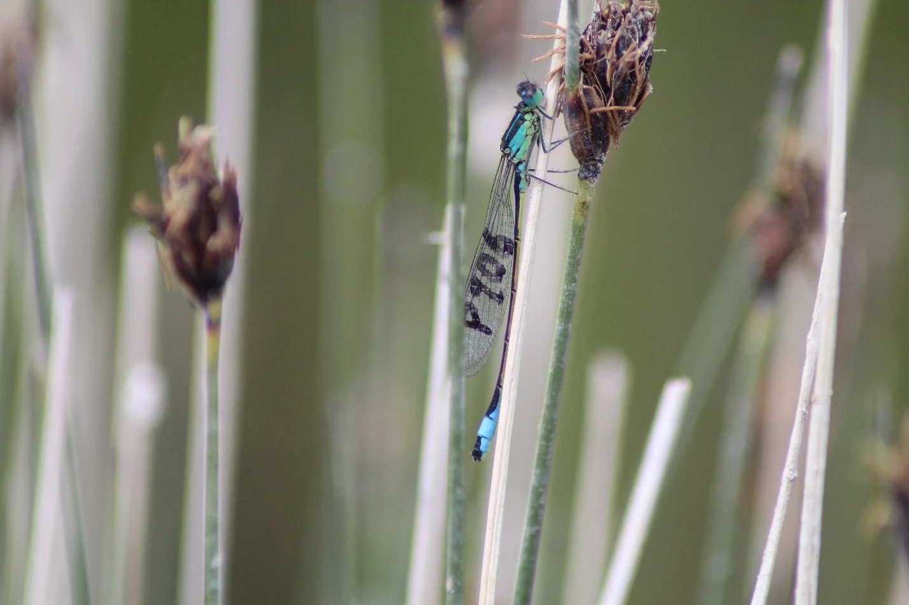
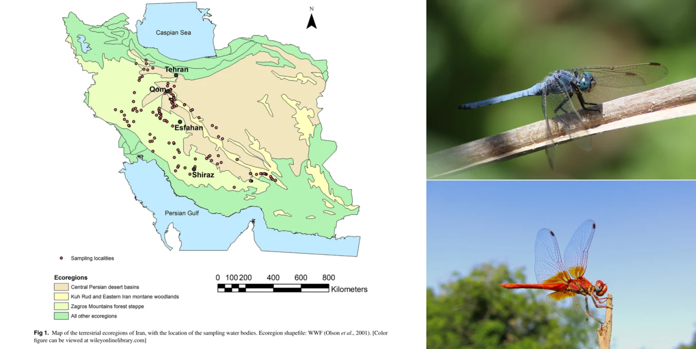
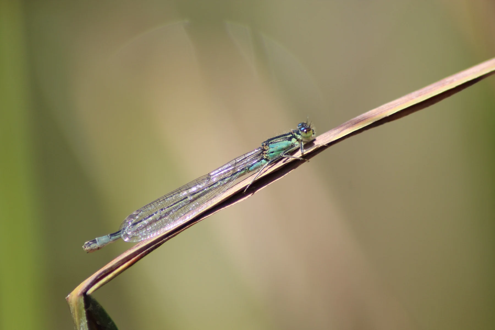

Research Projects.
Biodiversity Researcher | Quantitative Ecologist
Projects in which I developed the research questions, designed the study, and took primary responsibility for carrying out the work.

Context Dependence in Biodiversity–Environment Relationships Across Contrasting Climatic Regions
This project examines biodiversity–environment relationships across contrasting climatic regions with varying levels of biodiversity data availability.

Bird Diversity and Community Structure Across Environmental Gradients in Iran
This project investigates patterns of bird diversity in Iran.

Freshwater Biodiversity in the Arid Landscapes of the Middle East
This project developed comprehensive Odonata occurrence and functional-trait datasets to investigate freshwater biodiversity, water availability, and land use in the Middle East.

Climate Change and the Distribution of Invasive Freshwater Fish
This project investigates how climate and land-use changes may reshape the potential distributions of invasive freshwater fish in Western Asia.

Environmental Drivers of Ant Diversity in Arid Landscapes
This project investigated patterns of ant diversity and community composition along an elevational gradient in the arid landscapes of Central Iran.

Population Ecology and Spatial Habitat Use in a Polymorphic Damselfly
This project investigated the population ecology of Ischnura elegans in an arid region of Central Iran.

Odonata Diversity, Distribution, and Community Ecology in Arid Iran
This project combined faunistic surveys and community ecology to investigate freshwater biodiversity in the arid and semi-arid regions of Iran.

Genetic Diversity and Population Structure of Damselflies
This project investigated the genetic diversity and population structure of Ischnura elegans in the arid landscapes of central Iran.
No projects in this category.